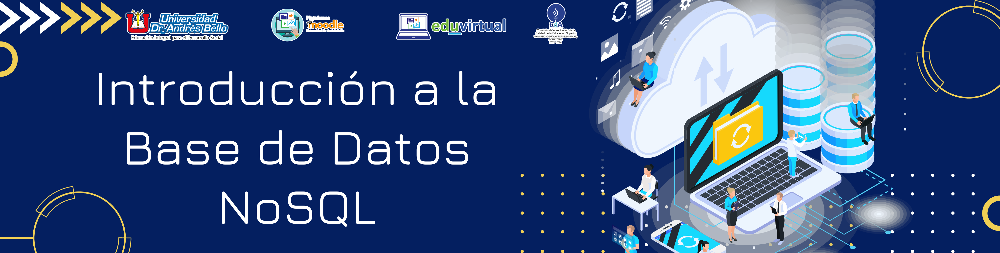

Introducción a la Base de Datos NoSQL y Tipos de Datos
2. Introducción a la Base de Datos NoSQL
Contenido
Para comprender las bases de datos NoSQL, decir que es un concepto y un modelo de base de datos flexible. En general y específicamente NoSQL no sigue las reglas de una base de datos relacional (RDBMS). NoSQL tampoco utiliza el lenguaje de consultas SQL. NoSQL es un modelo de base de datos diferente en comparación con SQL. Las funciones de base de datos NoSQL son las mismas que las funciones de base de datos SQL clásicas, pero con sus propias ventajas y desventajas. Al igual que SQL RDBMS en general, NoSQL es útil para procesar datos y almacenarlos para que tanto el servidor como el cliente puedan reutilizarlos o acceder a ellos. Los datos se almacenan de manera consistente para que tanto el Servidor como el Cliente vean los mismos datos.
NoSQL se adhiere a las reglas BASE, que son básicamente disponible, estado suave y consistencia eventual. Los datos que contiene pueden cambiar incluso si no hay entrada, es como un RDBMS con Triggers instalados automáticamente. Debido a esto, NoSQL es más adecuado y adecuado para aplicaciones que requieren cambios rápidos debido a su naturaleza más dinámica y flexible. El término NoSQL fue publicado por primera vez por Carlo Strozzi en 1998 para nombrar la base de datos que estaba desarrollando en ese momento, ‘Base de datos relacional de código abierto Strozzi NoSQL’. Strozzi dijo que la forma en que NoSQL funcionaba en ese momento era «muy diferente» de las bases de datos relacionales en su conjunto, razón por la cual lo llamó "NoREL", que se refiere al término "No relacional".
A finales de 2000, se reanudó el desarrollo de NoSQL, con el objetivo de superar las limitaciones de SQL, especialmente en términos de escalabilidad y el potencial para la recopilación de datos multiestructurados.
Beneficios de NoSQL
Las bases de datos NoSQL ofrecen a las empresas ventajas importantes sobre el RDBMS tradicional, entre ellas:
Escalabilidad
Las bases de datos NoSQL utilizan una metodología de escala horizontal que facilita la adición o reducción de la capacidad de forma rápida y sin interrupciones con el hardware de los productos básicos. Esto elimina el tremendo costo y complejidad de la fragmentación manual que es necesaria al intentar escalar.
Rendimiento
Simplemente agregando recursos dinámicamente, las empresas pueden aumentar el rendimiento con las bases de datos NoSQL. Esto permite a las organizaciones continuar ofreciendo experiencias de usuario rápidas y confiables con un retorno de inversión previsible.
Alta Disponibilidad
Las bases de datos NoSQL generalmente están diseñadas para garantizar la alta disponibilidad y evitar la complejidad que viene con una arquitectura típica que se basa en nodos primarios y secundarios. Algunas bases de datos NoSQL distribuidas utilizan una arquitectura que distribuye automáticamente los datos de forma equitativa entre varios recursos para que la aplicación permanezca disponible para las operaciones de lectura y escritura incluso cuando falla un nodo.
Disponibilidad
Al replicar automáticamente los datos a través de múltiples servidores, centros de datos o recursos de la nube, las bases de datos NoSQL distribuidas pueden minimizar la latencia y garantizar una experiencia de aplicación consistente dondequiera que se encuentren los usuarios.
Obra publicada con Licencia Creative Commons Reconocimiento Compartir igual 4.0